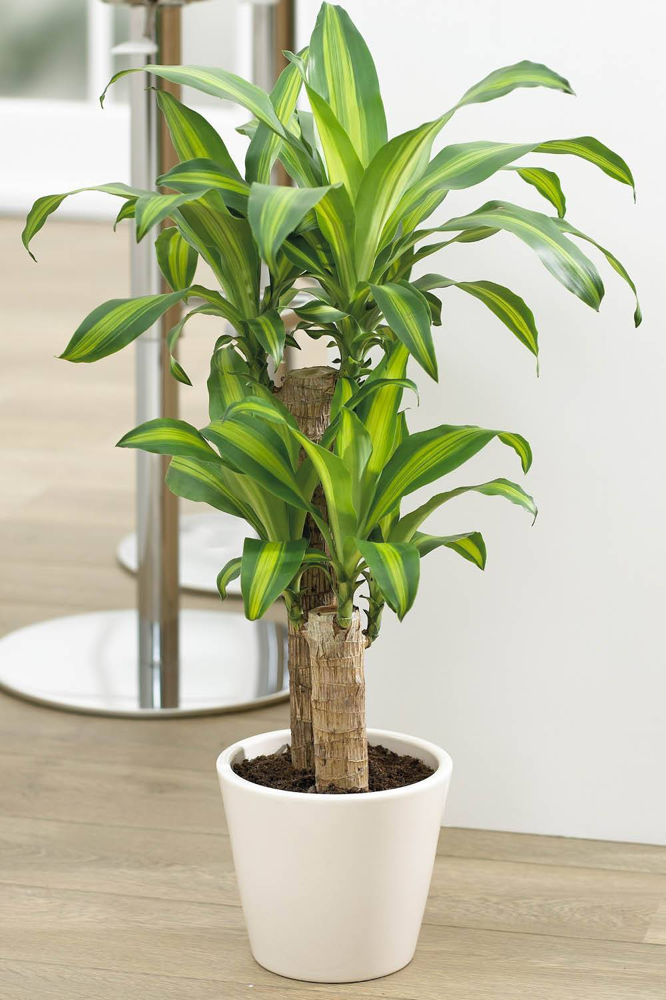
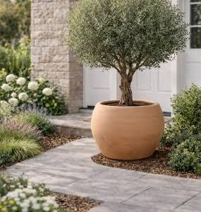
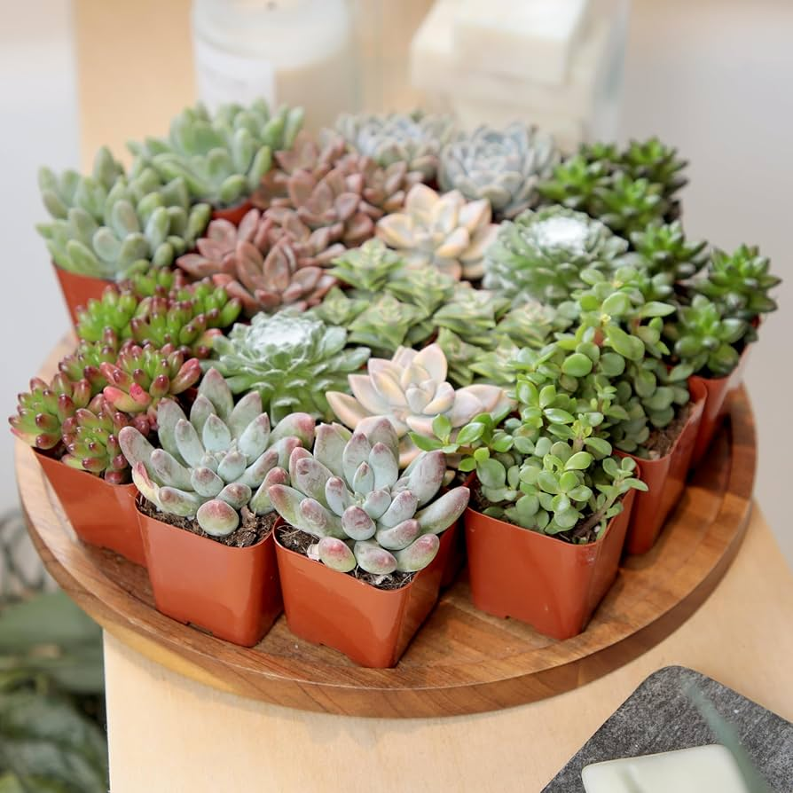
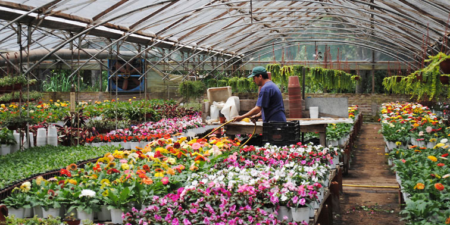

Interior
Para ambientes con luz indirecta y poco viento.
VER PLANTAS →Mas de 200 especies de interior y exterior, con explicación de cuidados de cada una. Elegi por luz, por riego o por lo que te guste mirar.
Tres familias que cubren casi cualquier rincón: el living con poca luz, el balcón que se lleva todo el sol y el escritorio.

Para ambientes con luz indirecta y poco viento.
VER PLANTAS →
Ideales para patios, jardines y balcones soleados.
VER PLANTAS →
Bajo riego y máxima resistencia para escritorios y ventanas.
VER PLANTAS →
Cultivamos en Santa Fe desde 2022. Cada planta que sale de aca paso por nuestras manos y tiene una ficha con lo que necesita para no morirse en dos semanas.